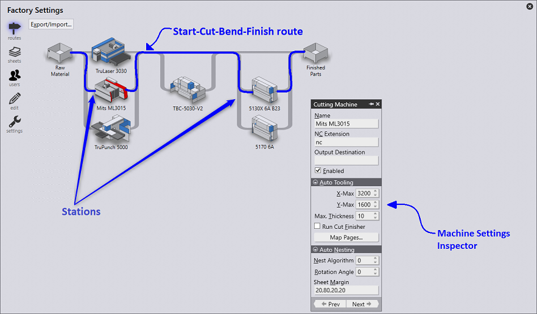

During the installation, Praxis imports CAM machines from Flux and MetaCAM and builds a routing table with possible workflow routes between. A route is a connection between the two processing stations in the routing view.

In this view:
● Machines are displayed as processing stations. Each station is drawn with a picture and name.
● The stations are connected to each other with routes indicating a feasible workflow path which a part can take from start-to-finish.
● Station properties can be checked-out by placing the mouse over it.
● The station availability can be edited by clicking on it and toggling the enabled checkbox in the settings inspector dialog
● The inspector can also be used to edit tooling/nesting constraints and settings.
● The modified settings are automatically saved to data:/system/machine.curl file when the Factory dialog closes.